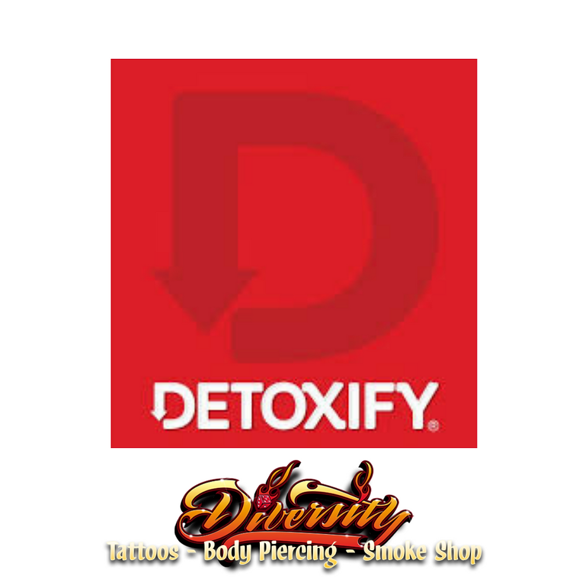
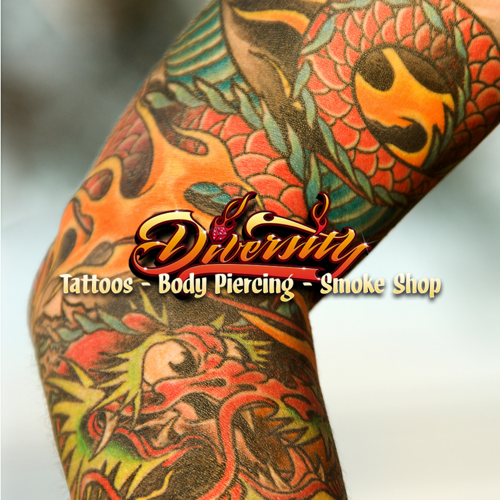
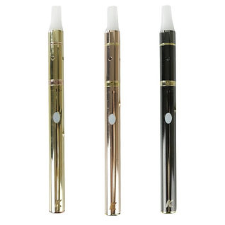
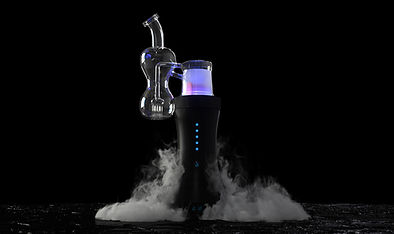
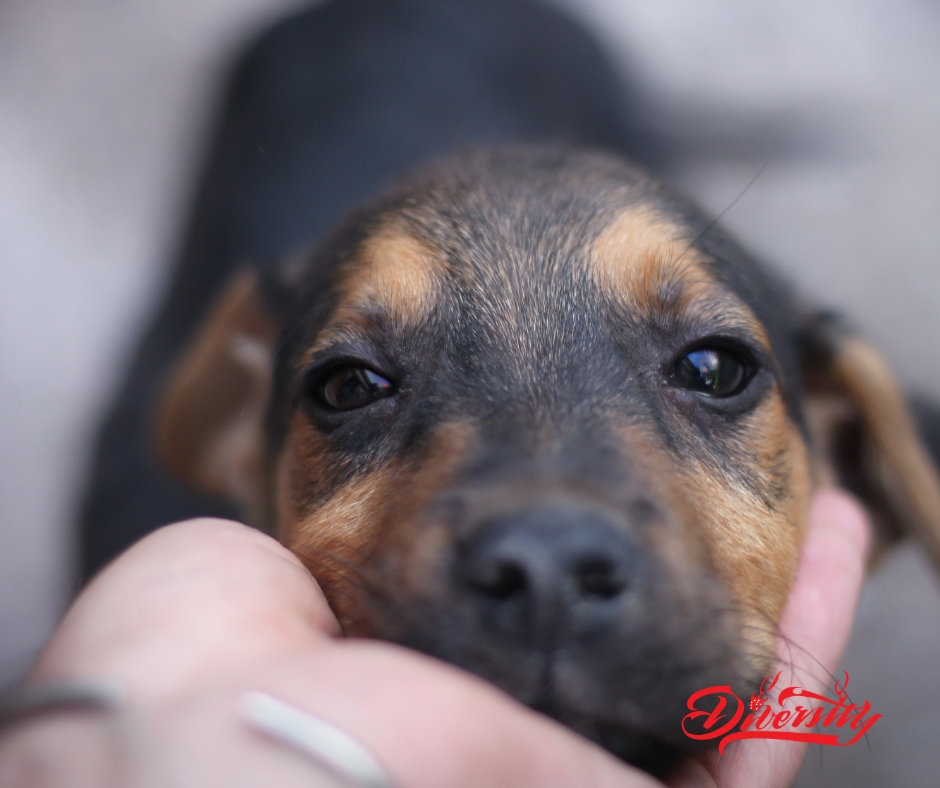

Blog
Advice, aftercare and product education.
Browse tattoo planning, aftercare, detox and product education from the studio.

Honeystick Beekeeper - Conceal Essential Oil Vaporizer
Honeystick Beekeeper - Conceal Essential Oil Vaporizer is a studio media post from Diversity Tattoo. Contact the studio for current product availability, service questions, and visit details.
Read post
What is "Detox"
Let’s face it: we’re all toxic to some degree. Whether it’s the air we breathe, the foods we eat, the smoke we exhale, or the fluids we’re chasing with a soda-back, our bodies are built to naturally expel these toxins from our systems. If you party hard,...
Read post
Are Detox Cleanses Permanent?
If you’re considering a cleanse, one of the questions that you may be asking yourself is whether or not it will be a permanent detox or a just temporary solution. These days, the word “cleanse” means a variety of things; you could be avoiding alcohol for a...
Read post
Tips for a Successful Cover Up Tattoo
The best course of action for masking your old tattoo depends on a few different things, like the colors in your original tattoo, how old/faded it is, the subject of the cover-up tattoo you want, and whether or not any components of your old tattoo are...
Read post
Can My Tattoo Be Covered Up???
Saddly, bad tattoos happen to the best of us. Maybe you let a novice practice on you and s/he gave you a truly bad tattoo, or maybe you have a well-done tattoo that's of something you no longer love... like your ex's name. Whatever the reason, if you have a...
Read post
What to do if your Tattoo or Piercing itches...
Tattoos & Piercings have become more and more popular to the point where it’s practically mainstream now. Getting a quality tattoo & piercing is a very intricate process which involves some excruciating pain. This is followed by the healing process and some...
Read post
KANDYPENS K-STICK
The KandyPens K-Stick Supreme is a sleek, sexy, and super compact vape pen for waxy oil consumption. Upgraded with a quartz rod atomizer, variable voltage, a sophisticated high grade metal build, and an ergonomic rubbery mouthpiece, the K-Stick Supreme...
Read postLEVO oil & butter maker.
The LEVO Oil Infuser is taking the pot world by storm. This popular appliance infuses flavors of all kinds of healthy food, including a variety of herbs, fruits, and more. It allows you to manufacture oils yourself, custom-made at home, which you can use to...
Read post
DAVINCI MIQRO
he DaVinci MIQRO is a portable vaporizer unlike any other. Placing the innovative technology of its bigger brother, the IQ, into a 31% smaller design, the MIQRO places powerful vapor production in your palm. This pocket-friendly work of art features 4...
Read post
NOW in Store DR. Dabber SWITCH
The Dr. Dabber SWITCH is an advanced dual-use vaporizer that utilizes induction heat technology, significantly faster than other methods, induction heating creates an even surface temperature with less hot-spots, providing a consistent flavor during the...
Read post
Benefits of CBD Dog Treats
Obviously, the #1 benefit of CBD treats for dogs is that your dog will love them – products like Chicken-Flavored Treats or Infused CBD Biscuits for Dogs are every bit as slobber-inducing as a normal doggy bone.
Read post
Ways to Give your Dog CBD
Understanding the benefits and health advantages of CBD oil for dogs is one thing, but getting them to actually take it or ingest it can be another thing altogether.
Read postTaking Care of a Tattoo
#1 LEAVE YOUR BANDAGE ON FOR A MINIMUM OF 1 HOUR:
Read post
Tips for choosing your first Tattoo
There are a lot of mixed thoughts and emotions you may experience before getting your first tattoo. You may feel excited, happy, impatient, and even a little nervous. Let us help to put your mind at ease with these 11 tips that are sure to help your first...
Read post
What Medical Conditions CBD for Dogs Help With
While its most common use is treating pain associated with arthritis, cancer, and other chronic ailments, CBD oil for dogs can be used for a host of other conditions as well, though it must be said that a large portion of the veterinary community remains...
Read post